GLM with count, binary, and proportional data
Tad and Meghan Howard
Assigned Reading:
Chapters 9 & 10 from: Zuur, A. F., Ieno, E. N., Walker, N., Saveliev, A. A. and Smith, G. M. 2009. Mixed Effects Models and Extensions in Ecology with R. Springer. link
Key Points
Poisson GLM for count data, without overdispersion
family = poissonModel selection: AIC or hypothesis testing (z-statistics,
drop1(),anova())Model validation: Use normalized (or Pearson) residuals (as in Ch 4) or deviance residuals (default in R), which give similar results (except for zero-inflated data).
Overdispersion (variance is larger than mean): Needs correction when Phi (= D/(n-P)) > 1.5, and quick fix is to use
family = quasipoisson, but cost is that se of parameters will be multiplied by sqrt(Phi).
Negative binomial GLM for count data, with overdispersion
Use when Phi > 15
glm.nb()inlibrary(MASS)(Modern Applied Statistics with S)Advantage of NB over quasipoisson:
step()andstepAIC()can be used for model selectionThere can be overdispersion in NB GLM, but options for fixing it are scarse in R.
Offset: equation 9.18 on p. 240
L0 <- glm(Copepod ~ offset(LVol) + fStation, family = poisson, data = Lice)
Bernoulli GLM for binary (presence-absence) data
Table 10.1: getting rid of lower (0) and upper (1) bounds of probabilities
family = binomialfamily = binomial(link="probit")family = binomial(link="cloglog")- when there are many zeros or many onesBernoulli GAM (Fig 10.6)
Binomial GLM for proportional data
Model on p. 255: Yi ~ N(ni, pii)
family=quasibinomialfor overdispersed data
Analysis Example
My data:
I sampled mosquitoes in 38 sites of varying vegetation cover and microclimate. Given what we know about mosquito responses to microclimate and habitat requirements, I expect that variation in vegetation and microclimate should impact suitability of sites for specific mosquito species, and ultimately impact which/how many mosquitoes are found in a site. I am most interested in Aedes albopictus, the main disease vector species found in this study.
The data for the purpose of this exercise include:
- Presence of Aedes albopictus in sites
- Proportion of Aedes albopictus out of total mosquitoes trapped
- Mosquito abundance data
- Covariates of interest: vegetation cover, average annual minimum temperature
I want to investigate the relationship between my environmental covariates and 1) the presence of Aedes albopictus, and 2) the proportion of Aedes albo individuals out of the total trap count of mosquitoes.3) counts of Aedes albo
GLM for Presence/Absence Data
Students in the course can download the data from our Canvas site into a data folder in their working directory.
First, I’ll read in the data:
# Read in my data from data folder in your working directory
aedes_dat <- read.csv("data/AedesData_EcoStats_Example.csv")
attach(aedes_dat)Next, I want to do some quick data exploration:
hist(Proportion, breaks=16, xlab = "aedes proportion", freq = FALSE)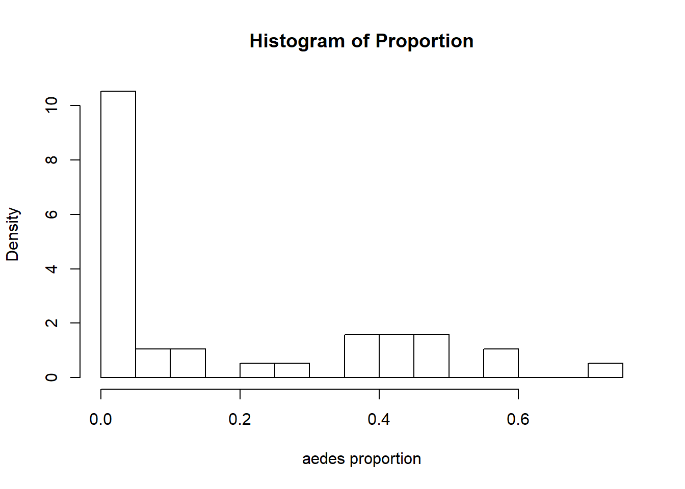
hist(aedes, breaks=16, xlab = "vegetation cover", freq = FALSE)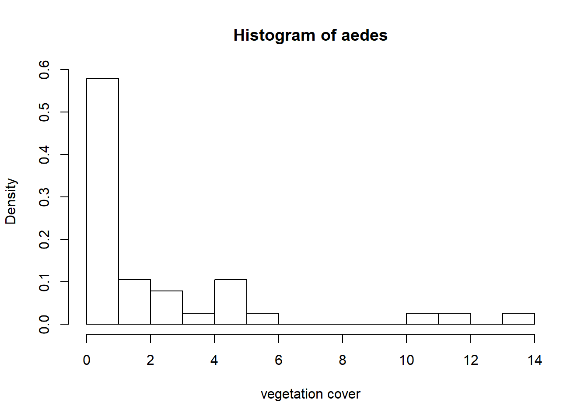
dotchart(aedes, xlab = "Aedes count",
ylab = "Order of data", labels = F)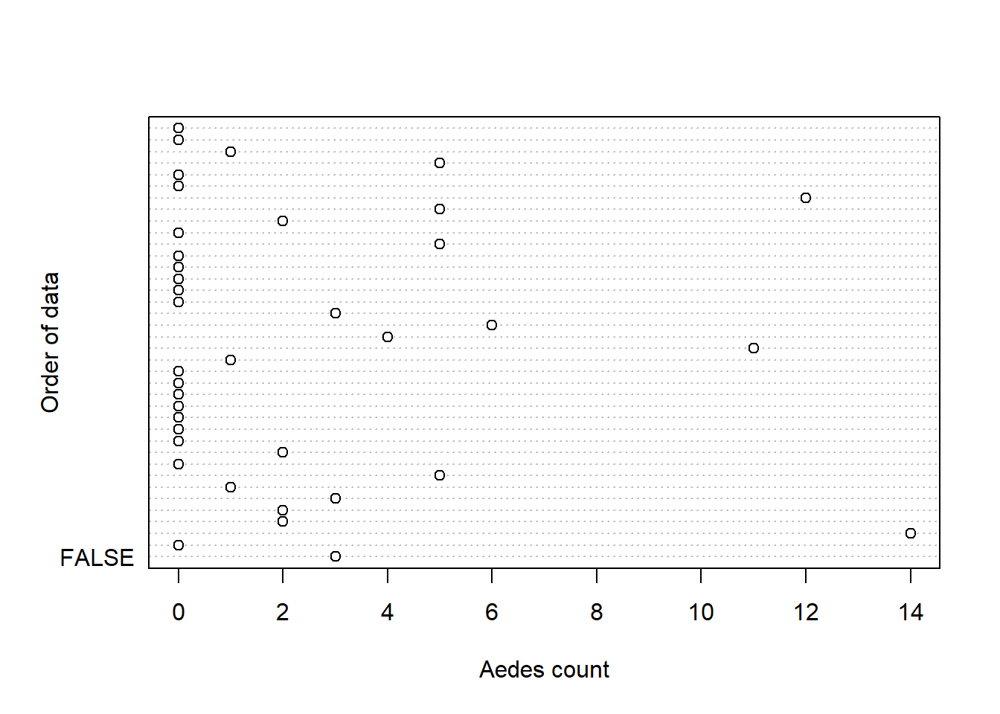
dotchart(Proportion, xlab = "Proportion Aedes",
ylab = "Order of data", labels = F)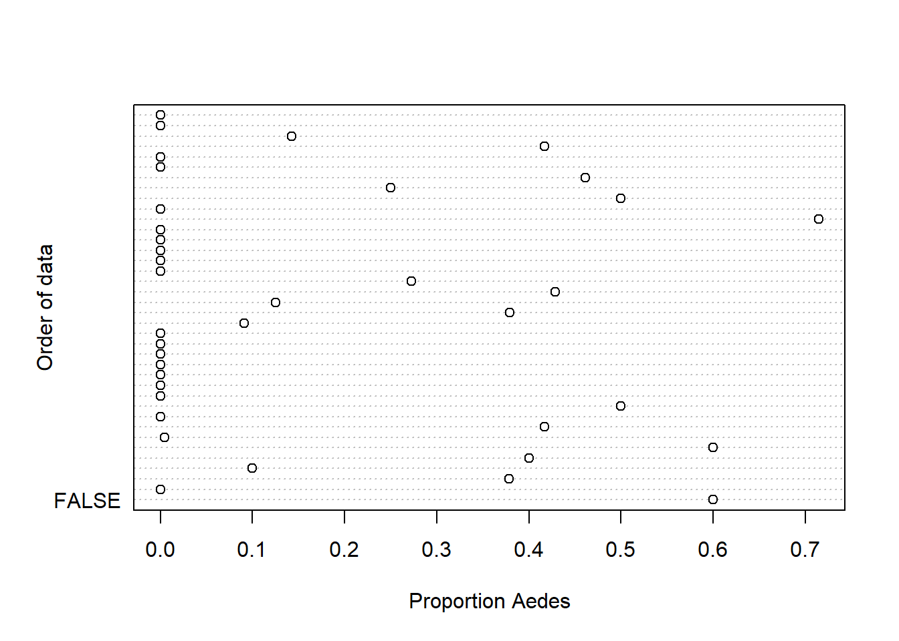
plot(Vegetation,Presence)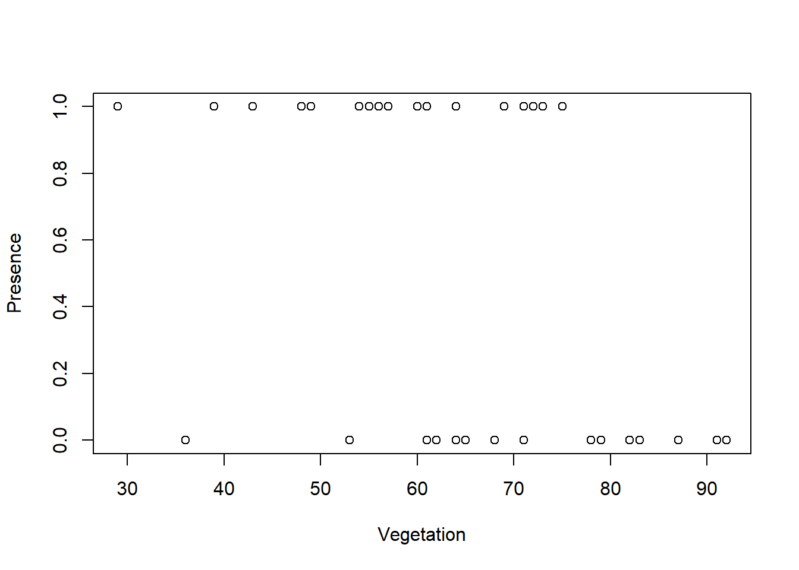
plot(TempMin, Presence)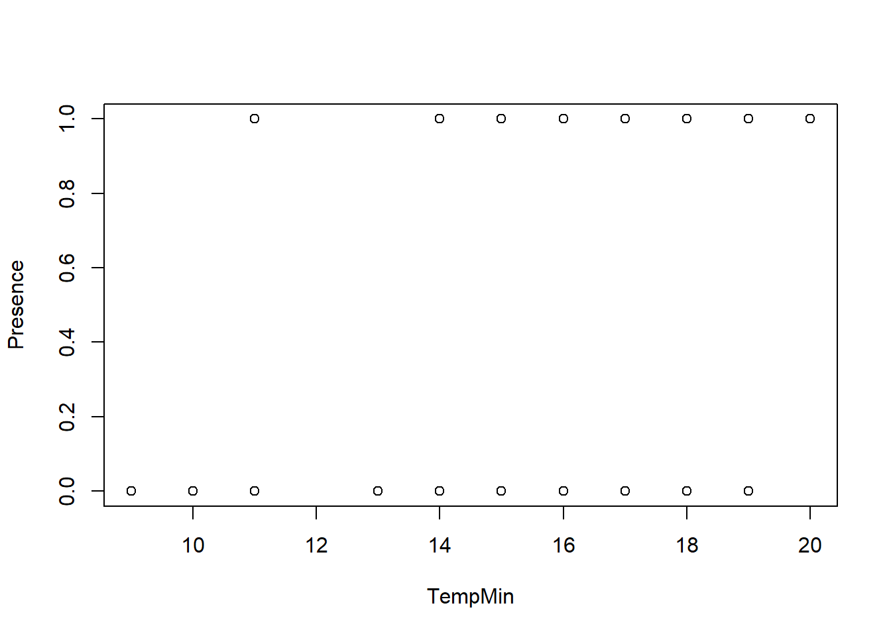
plot(Vegetation,Proportion)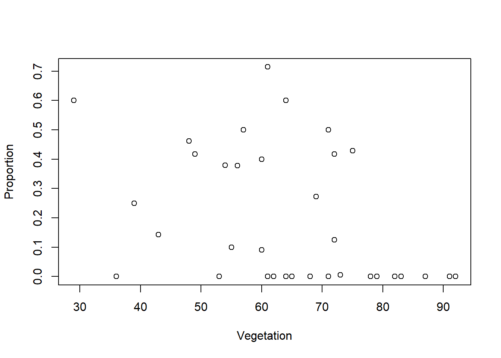
#quick visual check of veg/temp covariation
plot(Vegetation,TempMin)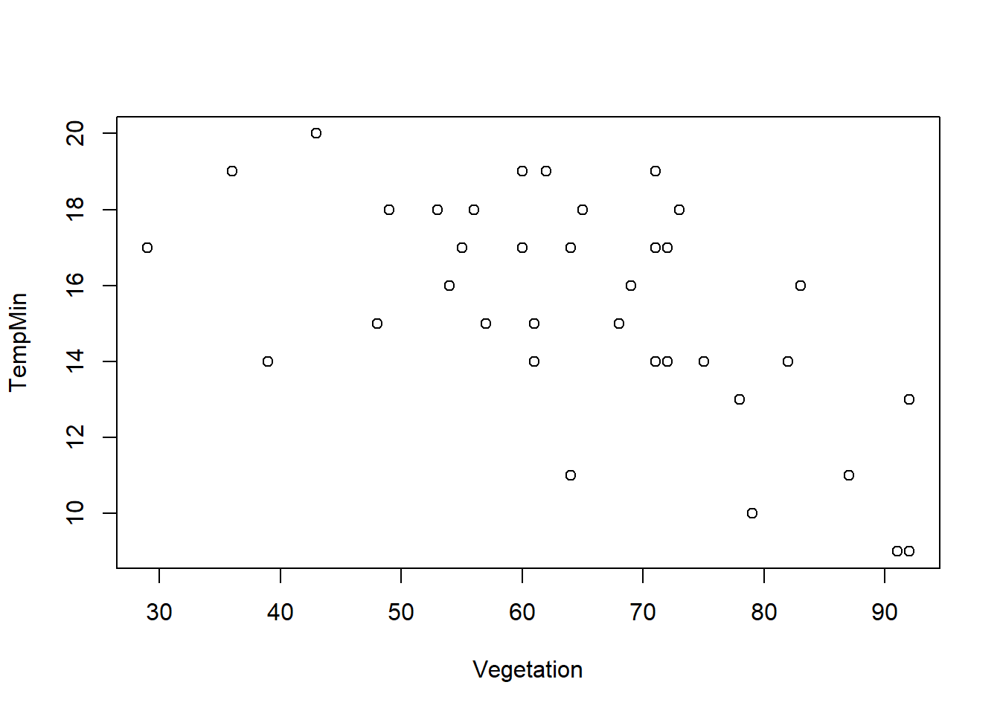
cor(Vegetation,TempMin) #Pearson correlation coefficient (default)
The count and proportion data are definitely zero-inflated. The highest values that are up for evaluation as outliers are not considerably larger than the others, so I am going to keep them.
I am going to try fitting a binomial glm for the presence/absence data using vegetation cover and minimum temp. I will use the standard link function (logit). Both logit and probit link functions assume that you have approximately an equal number of zeros and ones…and I do!
model1 <- glm(Presence ~ Vegetation + TempMin, family = binomial(link = "logit"),
data = aedes_dat)
summary(model1)##
## Call:
## glm(formula = Presence ~ Vegetation + TempMin, family = binomial(link = "logit"),
## data = aedes_dat)
##
## Deviance Residuals:
## Min 1Q Median 3Q Max
## -2.16890 -0.99378 -0.07501 0.99064 1.50534
##
## Coefficients:
## Estimate Std. Error z value Pr(>|z|)
## (Intercept) 5.39261 4.41440 1.222 0.2219
## Vegetation -0.07886 0.03660 -2.155 0.0312 *
## TempMin -0.01587 0.16782 -0.095 0.9247
## ---
## Signif. codes: 0 '***' 0.001 '**' 0.01 '*' 0.05 '.' 0.1 ' ' 1
##
## (Dispersion parameter for binomial family taken to be 1)
##
## Null deviance: 52.679 on 37 degrees of freedom
## Residual deviance: 43.933 on 35 degrees of freedom
## AIC: 49.933
##
## Number of Fisher Scoring iterations: 4#load car library for easy VIF function
library(car)##
## Attaching package: 'car'## The following object is masked from 'package:dplyr':
##
## recodevif(model1)## Vegetation TempMin
## 1.404985 1.404985Looks like minimum temperature is not significant when Vegetation is included. I have a p-value < 0.05 for vegetation, so I’ll drop minimum temperature in the model.
model2 <- glm(Presence ~ Vegetation, family = binomial(link = "logit"),
data = aedes_dat)
summary(model2)##
## Call:
## glm(formula = Presence ~ Vegetation, family = binomial(link = "logit"),
## data = aedes_dat)
##
## Deviance Residuals:
## Min 1Q Median 3Q Max
## -2.16875 -0.99543 -0.07211 0.98946 1.50902
##
## Coefficients:
## Estimate Std. Error z value Pr(>|z|)
## (Intercept) 5.02479 2.05386 2.447 0.0144 *
## Vegetation -0.07703 0.03088 -2.494 0.0126 *
## ---
## Signif. codes: 0 '***' 0.001 '**' 0.01 '*' 0.05 '.' 0.1 ' ' 1
##
## (Dispersion parameter for binomial family taken to be 1)
##
## Null deviance: 52.679 on 37 degrees of freedom
## Residual deviance: 43.942 on 36 degrees of freedom
## AIC: 47.942
##
## Number of Fisher Scoring iterations: 4And now I can plot the predicted relationship.
#create new covariate values within observed range for predictions
pred1 <- data.frame(Vegetation = seq(from = 20,
to = 95, by = 5))
Pred <- predict(model2, newdata = pred1, type = "response")
plot(x = Vegetation, y = Presence)
lines(pred1$Vegetation, Pred)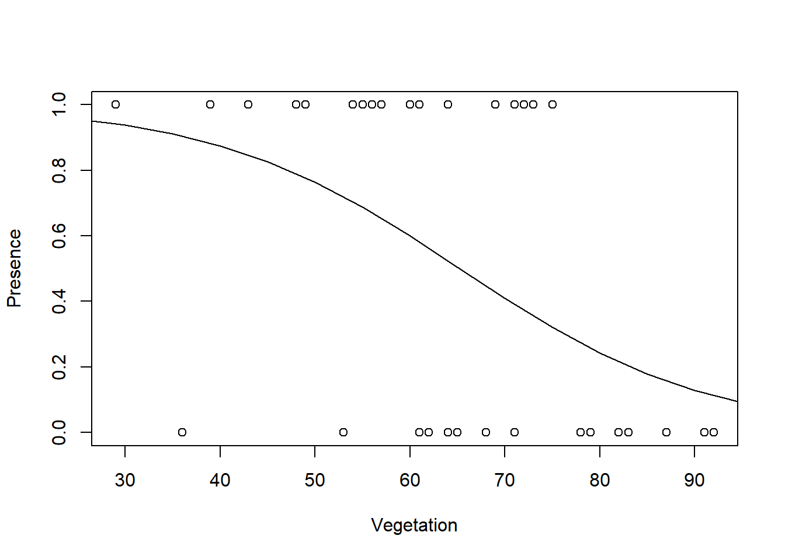

I can use a likelihood ratio test to determine whether the model without minimum temperature is better.
# LR test by dropping each term shows that Vegetation should be retained.
drop1(model1, test = "Chi")## Single term deletions
##
## Model:
## Presence ~ Vegetation + TempMin
## Df Deviance AIC LRT Pr(>Chi)
## <none> 43.933 49.933
## Vegetation 1 49.951 53.951 6.0184 0.01416 *
## TempMin 1 43.942 47.942 0.0089 0.92465
## ---
## Signif. codes: 0 '***' 0.001 '**' 0.01 '*' 0.05 '.' 0.1 ' ' 1GLM for Proportional Data
I’ll now try using the response variable that is the proportion of Ae. albo out of the whole sample of mosquitoes per site. I’m still going to stick with vegetation cover in a simple regression.

model3 <- glm(Proportion ~ Vegetation, family = binomial,
data = aedes_dat)## Warning: non-integer #successes in a binomial glm!summary(model3)##
## Call:
## glm(formula = Proportion ~ Vegetation, family = binomial, data = aedes_dat)
##
## Deviance Residuals:
## Min 1Q Median 3Q Max
## -1.0104 -0.5257 -0.3454 0.3424 1.1523
##
## Coefficients:
## Estimate Std. Error z value Pr(>|z|)
## (Intercept) 1.13912 1.83392 0.621 0.535
## Vegetation -0.04293 0.02996 -1.433 0.152
##
## (Dispersion parameter for binomial family taken to be 1)
##
## Null deviance: 14.334 on 37 degrees of freedom
## Residual deviance: 12.132 on 36 degrees of freedom
## AIC: 25.903
##
## Number of Fisher Scoring iterations: 5Big realization: I probably need to deal with nonlinear responses in my data. I expect that there will be a density of Aedes around species-specific optimal conditions.
Friends, What’s next on this front?
In class we discussed using a quadratic term or GAM.
GLM for count data
I am also interested in general changes in mosquito abundance across the land use gradient. A few studies have shown an increase in overall abundance with forest cover.
Again, I’ll start with data exploration and will take a look at the total mosquito abundance data.
hist(Total, breaks=50, xlab = "Total mosquitoes", main = NULL, freq = FALSE)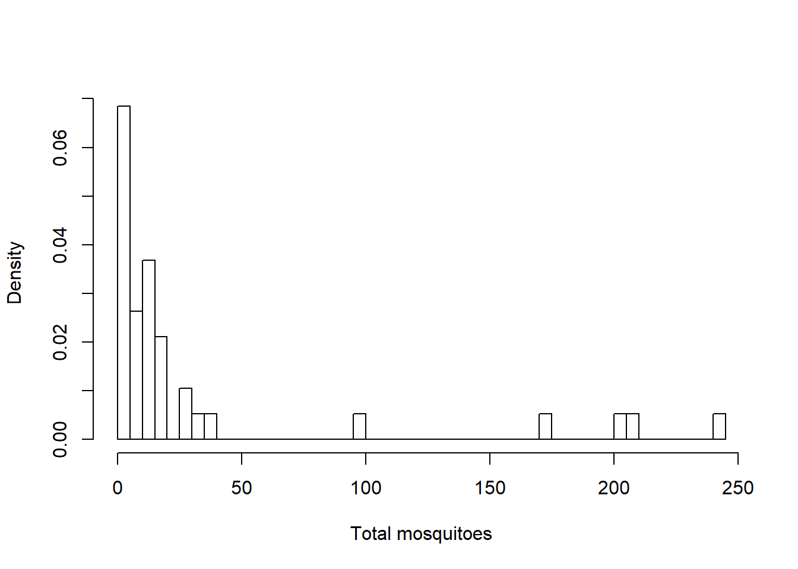
dotchart(Total, xlab = "Total mosquitoes",
ylab = "Order of data", labels = F)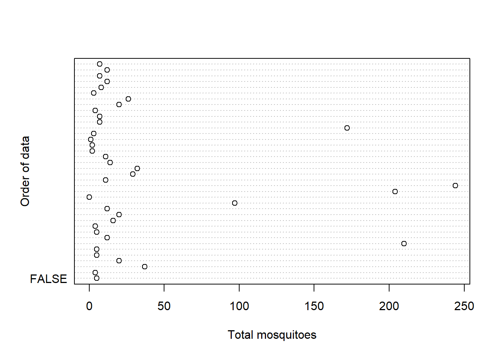
plot(Vegetation,Total)


So I’ve got some really big values at a few sites that had tons of mosquitoes, and they could have a huge influence on my model. What to do?
total.mod1 <- glm(Total ~ Vegetation, family = poisson,
data = aedes_dat)
summary(total.mod1)##
## Call:
## glm(formula = Total ~ Vegetation, family = poisson, data = aedes_dat)
##
## Deviance Residuals:
## Min 1Q Median 3Q Max
## -12.518 -4.969 -2.744 1.616 19.567
##
## Coefficients:
## Estimate Std. Error z value Pr(>|z|)
## (Intercept) -1.139980 0.173682 -6.564 5.25e-11 ***
## Vegetation 0.065094 0.002209 29.467 < 2e-16 ***
## ---
## Signif. codes: 0 '***' 0.001 '**' 0.01 '*' 0.05 '.' 0.1 ' ' 1
##
## (Dispersion parameter for poisson family taken to be 1)
##
## Null deviance: 2640.9 on 37 degrees of freedom
## Residual deviance: 1642.6 on 36 degrees of freedom
## AIC: 1808.4
##
## Number of Fisher Scoring iterations: 6As expected, I have a significant result. I can calculate the explained deviance as the authors do in section 9.5.3, and if this were an accepted result, I would find that vegetation explains 37.8% of the variation in mosquito abundance.
I’ll plot the prediction…
Pred2 <- predict(total.mod1, newdata = pred1, type = "response")
plot(x = Vegetation, y = Total)
lines(pred1$Vegetation, Pred2)

Given that the dispersion parameter is 1, this suggests that I do not have to worry about overdispersion.
Next, validation: We need to take the residuals of choice (e.g. deviance) and plot them against (i) the fitted values, (ii) each explanatory variable in the model, (iii) each explanatory variable not in the model (the ones not used in the model, or the ones dropped during the model selection procedure), (iv) against time, and (v) against spatial coordinates, if relevant. We do not want to see any patterns in these graphs. If we do, then there is something wrong, and we need to work out what it is.
Discussion Questions
Q1: How to validate a binomial GLM model?
Q2: What are potential reasons for choosing between a quasi-Poisson model or negative binomial model to deal with overdispersion?
Q3: I thought these 2 chapters had a lot of information to take in…what are your questions?
After-class follow-up
Quantile regression
- Here is a package “quantreg” and a vignette:
https://cran.r-project.org/web/packages/quantreg/index.html
https://cran.ms.unimelb.edu.au/web/packages/quantreg/vignettes/rq.pdf
- This looks like a good introduction, although not so recent:
http://onlinelibrary.wiley.com/doi/10.1890/1540-9295(2003)001[0412:AGITQR]2.0.CO;2/abstract